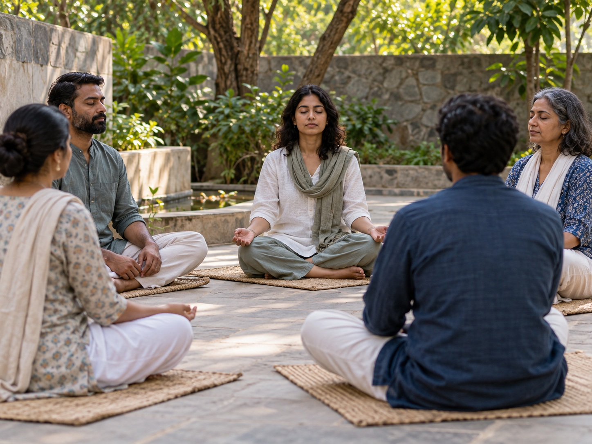

EXPERIENCE 03
Becoming One
A shared reflection on unity across traditions, drawing from the idea that all people belong to one human family.
WORLD SPIRITUALITY SUMMIT · 16–17 DECEMBER 2026
Bespoke experiences bringing together dialogue, conscious living, and music at Bharat Mandapam.

01 THEME
Conversations and shared reflections from spiritual traditions and ancient wisdom, to find answers to modern-day hurdles.

EXPERIENCE 03
A shared reflection on unity across traditions, drawing from the idea that all people belong to one human family.
EXPERIENCE 06
A dialogue among business leaders and practitioners on mindful enterprise and social impact.
EXPERIENCE 07
Small-group forums for spiritual masters and practitioners to connect and exchange ideas.
EXPERIENCE 09
A meeting point of international communities and spiritual traditions.
02 THEME
Spaces for mindful discovery, creative practice, and everyday wellbeing.

EXPERIENCE 01
India's largest marketplace for spirituality, bringing brands, ashrams, apps, and start-ups together.
EXPERIENCE 02
A public festival of curated stalls, product demonstrations, book launches, sound healing, meditation, and live art.
EXPERIENCE 04
Yoga, meditation, and wellbeing sessions across both days.
EXPERIENCE 05
A space for sound, breathwork, meditation, and traditional approaches to wellbeing.
03 THEME
Sound and performance bring the gathering to its close each day.

EXPERIENCE 08
Two evenings of music and harmony.